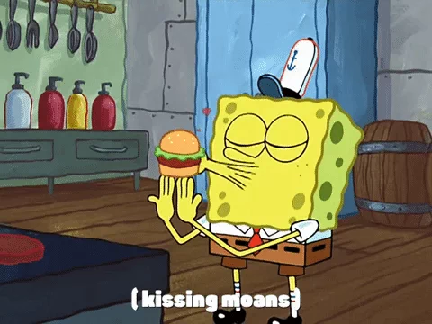
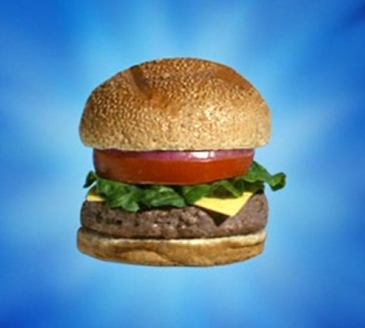

About the Meal
This meal is one so good that competitors have been trying to steal this recipe for years! Lucky for you, I'm bored and giving it away
this secret information. The krabby patty is the most renown meal from the show Spongebob Squarepants. It is served at the Krusty Krab and
could possibly the best burger to exist. Yes, even better than the Hit Me With Your Best Shallot Burger.
Recipe Reference
Recipe
Ingredients
- 1 1/3lb. of Ground Beef
- 3 tsp. of Old Bay seasoning
- 1 tsp. of Black Pepper
- 1 tsp. of Sea Salt
- 4 Slices of Cheddar Cheese
- 4 Sesame Seed Buns, Sliced in Half
- Ketchup
- Mustard
- 1 Jar of Dill Pickle Slices
- 1 Red Onion, Sliced
- 1 Tomato, Sliced
- 4 Leaves of Butter Lettuce
- 1/2 c. of Mayonnaise
Steps
-
Make the Burger Patties.
Heat a grill pan or saute pan at medium heat. While it heats combine the ground beef, salt, pepper, and 2 tsp. old bay seasoning. Now
form four equally sized patties (roughly 1/3lb each). Cook on each side for 4-5 minutes.
-
Cheese the Burgers.
Use a star shape cookie cutter to cut each slice of cheese into a star. Place the star shaped cheese on the patties
when there is about 30 seconds left of cooking. This gets the cheese to melt.
-
Create King Neptune's Poseidon Powder Aioli.
Stir the mayo and remaining old bay until thoroughly combined.
-
Assemble the Sandwhich.
Spread the aioli on the bottom of each bun. Then top it with a burger patty, ketchup, mustard, pickles, onions,
lettuce, and tomato. Then put the top bun on and serve.
Finished Result

Click to Return to the Homepage.